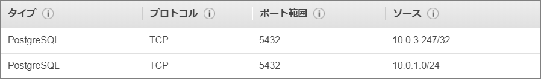

Aurora(PostgreSQL)とRDS(PostgreSQL)の環境で論理レプリケーションする
はじめに
PostgreSQL10から論理レプリケーションが使えるようになった。Auroraでもこの機能を使うことが出来るのでやってみる。基本的にここのドキュメントの通りやれば問題無し。
Aurora での PostgreSQL 論理レプリケーションの使用 - Amazon Aurora https://docs.aws.amazon.com/ja_jp/AmazonRDS/latest/AuroraUserGuide/AuroraPostgreSQL.Replication.Logical.html
環境
Aurora PostgreSQL 10.7 と RDS PostgreSQL 10.7 間でレプリケーション環境を構築する
マニュアル上の注意事項
- rds.logical_replication パラメータを有効にすると、DB クラスターのパフォーマンスに影響します。
- PostgreSQL データベースの論理レプリケーションを実行するために、AWS ユーザーアカウントは rds_superuser ロールを必要とします。
- パブリッシャーの既存の Aurora PostgreSQL DB クラスターを使用するには、エンジンバージョンが 10.6 以降であることが必要です。
事前準備
-
rds.logical_replicationを「0」から「1」に設定する
-
PostgreSQLからAurora側への通信をセキュリティグループで許可する

環境準備
レプリケーションを行うデータベースを作成
CREATE DATABASE repdb WITH OWNER postgres;
レプリケーションを行うテーブルを用意する。PostgreSQL10時点の論理レプリケーションはDDLレプリケーションを行わないので、Publisher、及びSubscriber側で実施する必要がある。
\c repdb
CREATE TABLE LogicalReplicationTest (a int PRIMARY KEY);
Publisher側だけにデータを投入。
INSERT INTO LogicalReplicationTest VALUES (generate_series(1,10000));
Publisher側で"CREATE PUBLICATION"を実行。“FOR ALL TABLES"を指定してここではデータベース全体を行う方式を選択した。
https://www.postgresql.jp/document/10/html/sql-createpublication.html
CREATE PUBLICATION FOR ALL TABLES そのパブリケーションでは、将来作成されるテーブルも含め、そのデータベース内の全テーブルについての変更を複製するものとして印をつけます。
#repdbに接続
\c repdb
CREATE PUBLICATION alltables FOR ALL TABLES;
Subscriber側で"CREATE SUBSCRIPTION"を実行。
#repdbに接続
\c repdb
CREATE SUBSCRIPTION auroratopostgresql CONNECTION 'host=aurorapostgresqlv1.cluster-xxxxxxxxx.ap-northeast-1.rds.amazonaws.com port=5432 dbname=repdb user=postgres password=postgres' PUBLICATION alltables;
ログを確認すると、レプリケーションが始まっていることが確認できる。(初期同期の模様。)
2019-12-14 09:25:49 UTC::@:[16112]:LOG: logical replication table synchronization worker for subscription "auroratopostgresql", table "logicalreplicationtest" has started
2019-12-14 09:25:49 UTC::@:[16112]:LOG: logical replication table synchronization worker for subscription "auroratopostgresql", table "logicalreplicationtest" has finished
pg_subscription_relを確認することでどのテーブルが論理レプリケーション対象となっているか確認可能。
SELECT * FROM pg_subscription_rel;
repdb=> SELECT * FROM pg_subscription_rel;
srsubid | srrelid | srsubstate | srsublsn
---------+---------+------------+----------
16425 | 16417 | d |
(1 row)
repdb=> select relname from pg_class where oid=16417;
relname
------------------------
logicalreplicationtest
(1 row)
repdb=>
レプリケーション設定はpg_replication_slotsビューから確認可能。
repdb=> select * from pg_replication_slots;
-[ RECORD 1 ]-------+-------------------
slot_name | auroratopostgresql
plugin | pgoutput
slot_type | logical
datoid | 24590
database | repdb
temporary | f
active | t
active_pid | 19407
xmin |
catalog_xmin | 23236
restart_lsn | 0/4F8C710
confirmed_flush_lsn | 0/4F8CAE8
Publisher側のpg_publicationからは作成した定義情報が確認できる。データベース内のすべてのテーブルをレプリケーション対象としたので「puballtables」が「True」になっている。
repdb=> select * from pg_publication;
-[ RECORD 1 ]+----------
pubname | alltables
pubowner | 16393
puballtables | t
pubinsert | t
pubupdate | t
pubdelete | t